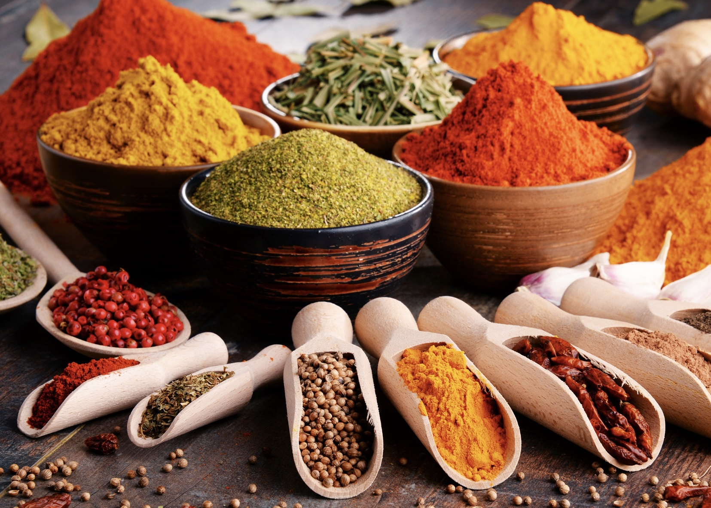

Как да изберем правилните подправки: Съчетаване на подправки за максимален вкус

Подправките са душата на всяко ястие. Те придават вкус, аромат и характер на храната, като я правят уникална и запомняща се. Но правилното съчетаване на подправки изисква знания и усет. Тази статия ще ви помогне да разберете как да избирате и комбинирате подправките, за да постигнете максимален вкус и аромат във вашите ястия.
Основи на подправките
Какво представляват подправките? Подправките са растителни продукти – семена, листа, корени или кора, които добавят вкус и аромат към храната. Те могат да бъдат:
- Сухи: Черен пипер, кимион, кориандър.
- Пресни: Босилек, магданоз, копър.
Класификация на подправките
- Сладки подправки: Канела, ванилия, карамфил – използват се основно в десерти.
- Пикантни подправки: Черен и червен пипер, чили – за по-интензивен вкус.
- Ароматни подправки: Босилек, розмарин, мащерка – добавят свежест и дълбочина.
Как да изберем правилните подправки?
- Разберете основния вкус на ястието: Вкусът на основните съставки определя какви подправки ще подхождат. Например:
- За месо: Розмарин, черен пипер, мащерка.
- За риба: Копър, лимонова кора, чесън.
- За зеленчуци: Риган, босилек, куркума.
- Комбинирайте подправки с културите: Различните кухни по света използват специфични комбинации от подправки:
- Италианска кухня: Босилек, риган, чесън.
- Индийска кухня: Къри, кимион, кардамон.
- Мексиканска кухня: Чили, кориандър, пушен червен пипер.
- Балансирайте вкусовете: Използвайте подправки, за да балансирате сладкото, киселото, соленото и горчивото в ястието.

Съвети за комбиниране на подправки
Съчетавайте подправките по аромати и използвайте основни комбинации:
- За месо: Чесън, червен пипер, розмарин.
- За супи: Дафинов лист, мащерка, черен пипер.
- За десерти: Ванилия, индийско орехче, кардамон.
Как да използваме подправките правилно?
1. Дозировка: Подправките трябва да подчертаят вкуса на ястието, а не да го прикриват.
2. Време за добавяне: Сухи подправки добавяйте в началото, а пресни в края на готвенето.
Как да съхраняваме подправките?
Съхранявайте подправките в тъмни, сухи и хладни места, използвайте стъклени буркани или метални кутии с капаци.
Как да експериментираме с подправки?
Не се страхувайте да съчетавате различни подправки и да опитвате нови комбинации. Вкусвайте храната често и коригирайте количеството.
Подправките са ключът към превръщането на обикновената храна в изключително ястие. С правилния подбор и комбинации можете да създадете вкусови шедьоври, които да впечатлят всеки.